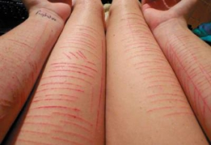

Apesar do progresso nos programas de prevenção, os dados ainda são assustadoramente altos: uma pessoa morre a cada 40 segundos por suicídio.
O suicídio é a segunda principal causa de morte entre jovens de 15 a 29 anos; só fica atrás de acidentes nas estradas.
Com 800 mil mortes, o suicídio está entre as 20 principais causas de morte em todo o mundo. Mais pessoas perdem a vida para esse problema do que para doenças como malária e câncer de mama ou mesmo guerra e homicídio.
Aqueles que ameaçam se matar estão apenas querendo chamar a atenção. A pessoa que tem a intenção de cometer suicídio costuma dar sinais sobre as formas como pensa em fazer isso para pessoas próximas, para profissionais de saúde e até mesmo via mídias sociais
Não é possível prevenir o suicídio. Quem quiser se matar, vai se matar. O suicídio pode e deve ser prevenido. A melhor forma de fazê-lo é falando abertamente sobre o tema em diferentes ambientes e nas mais diversas linguagens.
Pessoas que cometem suicídio são egoístas, fracas e querem achar uma solução rápida para os seus problemas. Tais ideias devem ser combatidas porque limitam as chances de que a pessoa que está pensando em cometer suicídio fale abertamente sobre isso por medo de ser julgada
Se algum aluno ou aluna pensar ou tentar cometer suicídio estará em risco de recaída para o resto da vida.O risco de suicídio pode ser tratado de forma eficaz com auxílio de profissionais capacitados, como psicólogos e psiquiatras que podem diagnosticar e acompanhar de perto aqueles que estão enfrentando questões de saúde emocional e mental. O fato de alguém ter enfrentado um período de fragilidade e vulnerabilidade emocional não significa que a pessoa estará sempre em risco de recaída, da mesma forma que acontece com dependentes químicos
Então não desista, sorria. Você é mais forte do que pensa e será mais feliz do que imagina.
Não desista, vá em frente. Sempre há uma chance de você tropeçar em algo maravilhoso. Nunca ouvi falar em ninguém que tivesse tropeçado em algo enquanto estava sentado.
